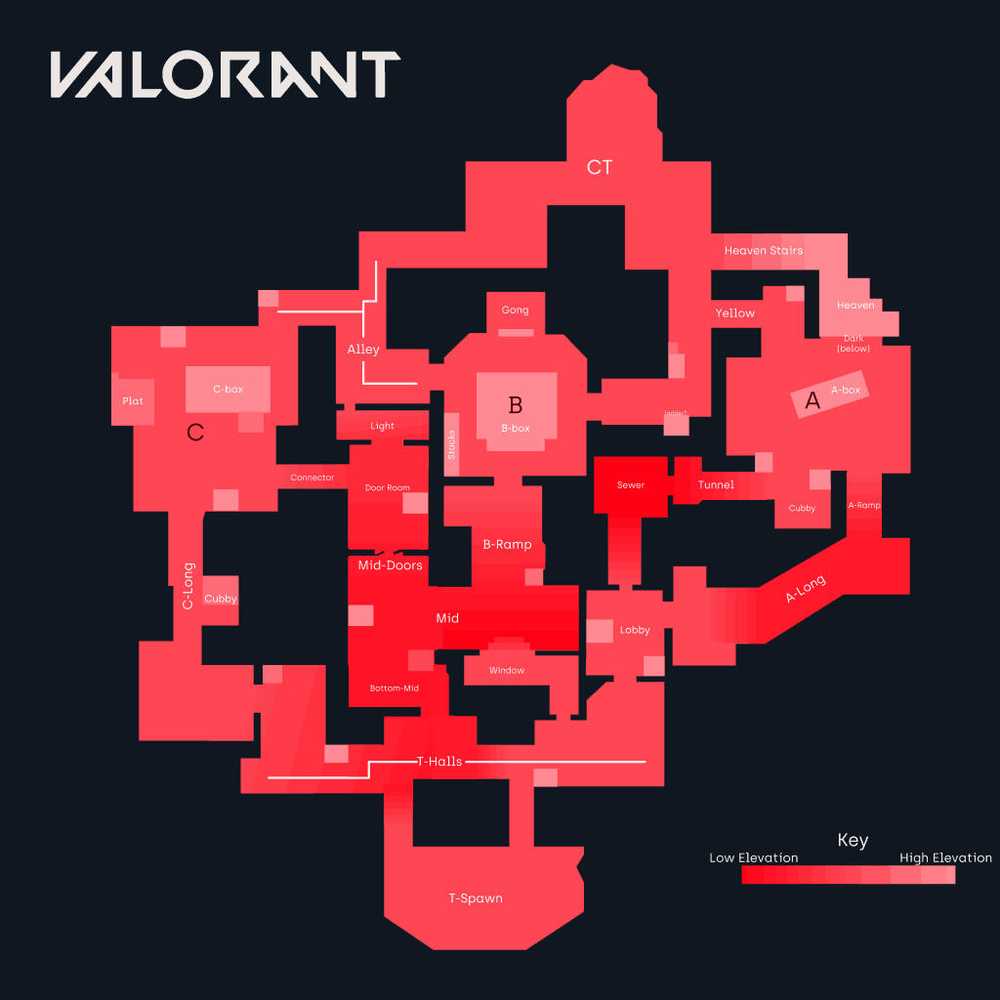
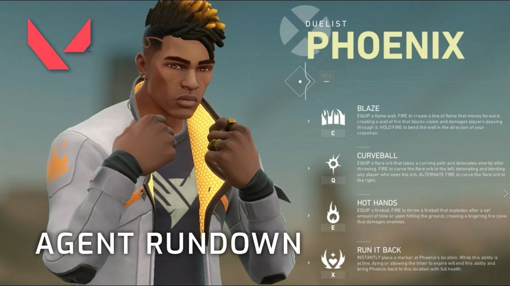

Objective
In Valorant, two teams of five are fighting to either plant or defuse the
spike. If you have played Counter Strike, it is much like planting and
defusing the bomb. But for those who have not played Counter Strike, I'll
explain. You can start on one of two teams, Attackers or Defenders.
Defenders are trying to protect special areas, called plant zones, from the
Attackers. The Attackers are trying to bring a single Spike to one of the
zones and plant it. Once the Spike is planted, the Defenders must defuse it
before it detonates. If it detonates, the Attackers win the round. If it
is defused the Defenders win. Either team can also win by eliminating all
members of the opposite team. Midway through the game, Attackers and Defenders
switch so all players get an even shot at victory. First to 13 rounds win!

Utility
In Valorant, each player gets to choose an Agent.
Agents are unique characters that offer specialized utility through abilites.
While every characters has different abilites, there are a few common types.
Smokes allow for an orb of visual cover to block line of sight. Walls also
do this but of course with a permeable wall. Molitovs are abilites that lay
and area on the ground that deals damage. This can stop enemies from advancing
through certain areas. Flashes blind enemies if they are in line of sight when
they detonate. This can help agents to engage in fights. There are also abilites
that can stun and heal. An important type of ability to understand is the ultimate
Ultimate abilities are strong abilites that charge up throughout the game. These
have all sorts of unique effects that can drastically turn the game into your
favor. Mastering these abilites are the ticket to victory.

Economy
You don't just get guns and abilities for free. At the start of each round,
players and choose to buy guns, abilites, and shields. Choosing the right
loadout for that orund is key. Money comes at the end of each round. Players
are awarded extra money for won rounds. Making sure to save some money after
a buy is important for being able to buy after losing a round.